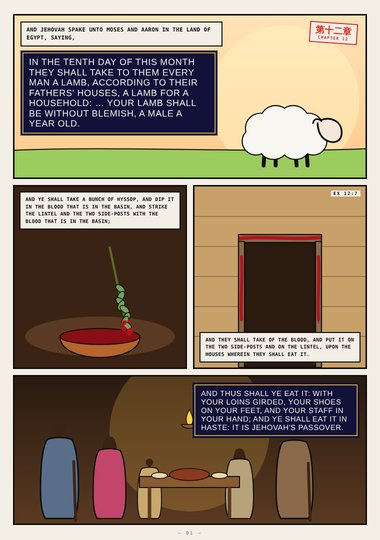
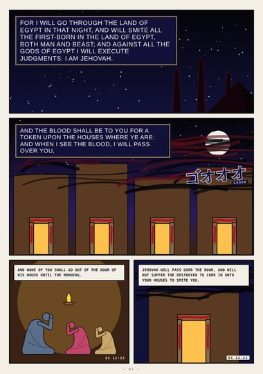
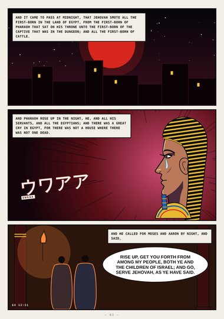
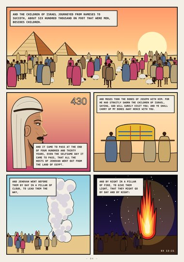
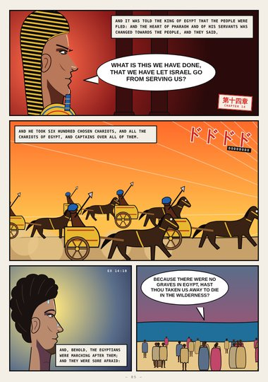
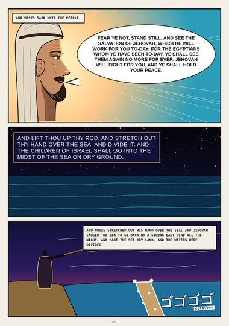
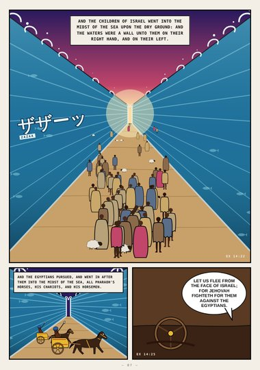
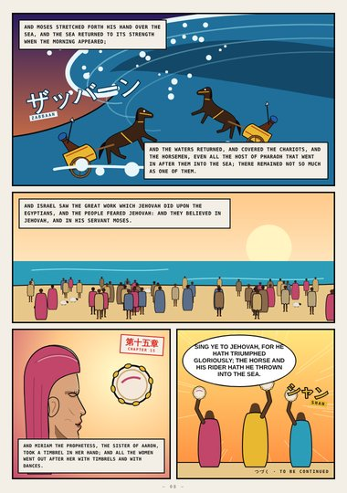

Exodus · Book Three · Exodus 12–15
The Red Sea
The passover lamb, the blood on the doorposts, the great cry at midnight, the pillars of cloud and fire, the sea divided, and the song of Miriam.
Start reading ›Pages
 CoverCoverExodus 12–15
CoverCoverExodus 12–15
Page 1The Passover LambExodus 12:1–11
Page 2When I See the BloodExodus 12:12–23
Page 3A Great CryExodus 12:29–31
Page 4Out of EgyptExodus 12:37–13:21
Page 5Pharaoh PursuesExodus 14:5–11
Page 6Stand StillExodus 14:13–21
Page 7Dry GroundExodus 14:22–25
Page 8The Horse and His RiderExodus 14:27–15:21